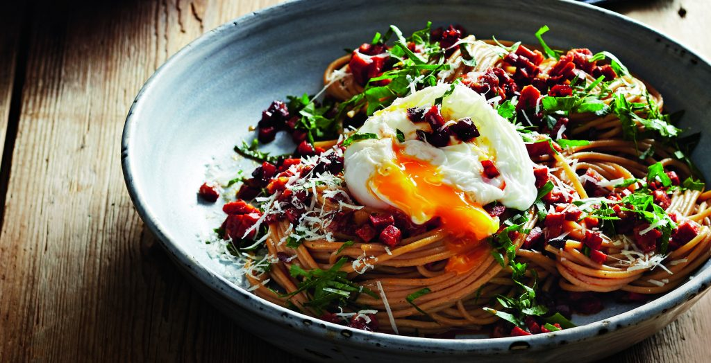

Spaghetti carbonara met chorizo

Ingredienten
- 150 g volkorenspaghetti
- 3 el extra vergine olijfolie
- 125 g droge chorizo, fijngesneden
- 50 g geraspte parmezaanse kaas
- 10 g platte peterselie, fijngesneden
- 2 eieren, zacht gepocheerd
Bereiding
- Kook de pasta in gezouten water volgens de aanwijzingen op de verpakking al beetgaar. Giet af en bewaar 80 ml van het kookvocht.
- Doe ondertussen de olie en chorizo in een hapjespan en bak de chorizo knapperig in ± 6 min. Schep regelmatig om.
- Voeg de pasta en het opgevangen kookvocht bij de chorizo en schep om.
- Neem de pan van het vuur en schep de pasta om met de helft van de parmezaanse kaas en de peterselie.
- Verdeel over diepe borden. Schep op elke portie een gepocheerd ei, strooi de rest van de parmezaanse kaas en peterselie erover en serveer.